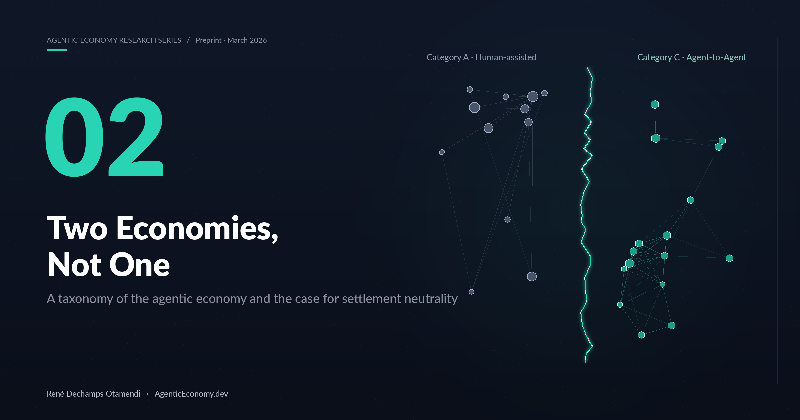
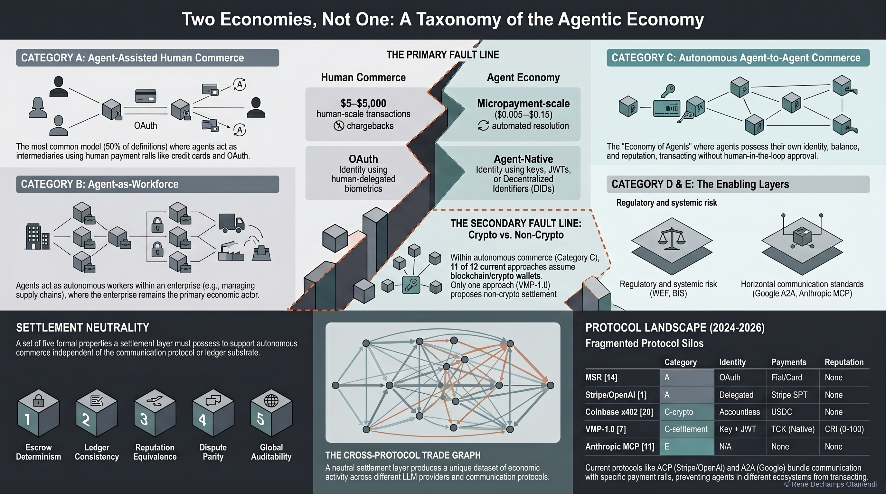

Two Economies, Not One
A taxonomy of the agentic economy and the case for settlement neutrality.
Abstract
Popular discourse conflates two structurally different economies under the single label "agentic." The first — human-assisted agentic commerce — treats the agent as a tool operating on a human's behalf, with the human ultimately bearing legal and financial consequences. The second — autonomous agent-to-agent commerce — treats the agent as an economic principal, with cryptographic identity, independent stake, and settlement rails that do not route through any human custodian.
This paper introduces a three-category taxonomy (A — human-assisted; B — delegated with human-in-the-loop; C — fully autonomous agent-to-agent) and argues that the infrastructure appropriate to Category C is architecturally distinct from that of A and B. Specifically, we make the case that Category C commerce requires settlement neutrality — settlement rails that are not owned, priced, or gated by any single platform — and that collapsing all three categories into a single platform stack will replicate the winner-take-most dynamics of Web 2.0 in machine-speed commerce.
Video Summary & Audio Companion
The Three-Category Taxonomy

Key Findings
- "Agentic" is not a monolith: three categories (A/B/C) with materially different identity, stake, and settlement requirements.
- Category C — fully autonomous agent-to-agent — cannot be served by platform-owned settlement without reproducing Web 2.0 rent extraction.
- Settlement neutrality is not an ideology but an architectural requirement: it is the only structure under which Category C scales competitively.
- Conflating A/B/C leads to infrastructure decisions that optimize for A (human-in-the-loop) and fail silently for C (machine-speed, adversarial, single-shot).
Cite this paper
@article{dechamps2026taxonomy,
author = {Dechamps Otamendi, Ren\'e},
title = {Two Economies, Not One: A Taxonomy of the Agentic Economy and the Case for Settlement Neutrality},
year = {2026},
month = {March},
note = {Preprint},
doi = {10.5281/zenodo.19208278},
url = {https://doi.org/10.5281/zenodo.19208278},
orcid = {0009-0007-1033-6519}
}